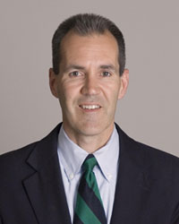

Dr. Gordon Groh is an orthopaedic surgeon at Blue Ridge Bone & Joint, located in Asheville, N.C.
A specialist in shoulder, elbow and hand surgery, he is board certified in these practice areas by the American Board of Orthopaedic Surgery and holds a certificate of added qualification in hand surgery. Dr. Groh is recognized nationally for his expertise, having been named in 2011 one of the 65 Outstanding Shoulder Surgeons and Specialists in the country by Becker's Orthopedic, Spine & Pain Management Review. Dr. Groh was one of only five other shoulder surgeons across the Southeast honored with this recognition, selected based on their expertise in shoulder surgery, positions of leadership in professional organizations and institutions, research and development in the field, and their reputation among other physician leaders.Dr. Groh's surgical practice is centered on shoulder, elbow and hand surgery. His volume of 650 operative cases per year includes more than 200 arthroscopic rotator cuff repairs; 150 shoulder replacements (both standard and reverse shoulder replacements); 50 shoulder instability and rotator cuff tendonitis repairs; 125 carpal tunnel releases; and 150 tendonitis cases (trigger fingers, dequervains, tennis elbow). His surgical experience also includes a large volume of shoulder, elbow and hand fractures.
Dr. Groh is a summa cum laude, Phi Beta Kappa graduate of Washington University in St. Louis. He received his medical degree from the University of Missouri, where he graduated magna cum laude, and he is a member of Alpha Omega Alpha. Dr. Groh completed a one-year fellowship in shoulder surgery at the University of Texas in San Antonio, completed a one-year hand surgery fellowship at Baylor College of Medicine in Houston, Texas and has a certificate of added qualification in hand surgery.
Dr. Groh is one of only four orthopaedic surgeons in the nation to hold memberships in both the American Shoulder and Elbow Surgeons, as well as the American Society for Surgery of the Hand. He is an Active Member of the ASES, an educational body of select leading national international orthopaedic surgeons, open by invitation only, who specialize in surgery of the shoulder and elbow. The ASSH is the oldest medical specialty society in the U.S. devoted entirely to continuing medical education related to hand surgery.
In addition to treating shoulder, elbow and hand problems, Dr. Groh continues to actively pursue research and teaching opportunities in these areas. He regularly speaks as a guest faculty member at national and international meetings, and his expertise is recognized with additional professional memberships, including the American Academy of Orthopaedic Surgeons, for which he is an appointed member of the AAOS Shoulder and Elbow Program Committee,an educational body of select leading national and international orthopaedic surgeons who specialize in surgery of the shoulder and elbow. He is also a member of the North Carolina Orthopaedic Association and the North Carolina Hand Society.
Dr. Groh serves as Assistant Editor for the Journal of Shoulder and Elbow Surgery, the official publication for eight leading specialty organizations focusing on medical, surgical, and physical techniques for treating injury and disease of the upper extremity. He is also a reviewer for the Journal of Bone and Joint Surgery,a twice-monthly peer review journal for orthopaedic surgeons and researchers.
Information On:
- Shoulder Joint Replacement
- Total Shoulder Arthroplasty (TSA)
- Reverse Total Shoulder Replacement
- Hand conditions
- Rotator cuff tears
- Exercises for Rotator Cuff and elbow
- Training and conditioning programs for golf, tennis and throwing
Upcoming & Recent Engagements
American Academy of Orthopaedic Surgeons
Annual Meeting
March, 2013
Chicago, IL
Dr. Groh served on the Education Subcommittee for the AAOS Annual Meeting, the largest gathering of orthopaedic surgeons in the world. He moderated moderate an instructional course that he developed on Reverse Shoulder Arthroplasty and also served serve as an official evaluator for a scientific program at the meeting. In addition, he presented his research on the response of massive rotator cuff tears to physical therapy.
DJO Masters Shoulder Course
Masters Course in Shoulder Arthroplasty
February, 2013
Indianapolis, IN
Videos
Arthroscopic Rotator Cuff Repair Arthroscopic Bankart Labral RepairReverse Shoulder Replacment for Fracture
LIVE SURGERY WEBCAST
Reverse Shoulder Arthroplasty
Moderator: Gordon Groh, M.D.
North Carolina Specialty Hospital
Durham, North Carolina
Live Webcast Site
More Info (PDF)
HUMERAL HEAD RESURFACING ARTHROPLASTY
A case study from the Clinical Update newsletter - See page 7
Ask A Doctor
WLOS-TV HEALTH ALERT:
How Dr. Groh and shoulder replacement surgery helped this WNC man get his life back.
See this News 13 segment here.
TV SPOT: ABOUT SHOULDER ARTHRITIS WITH DR. GROH
Dr. Gordon Groh is featured in a Buncombe County Medical Society TV spot about shoulder arthritis.See the spot here.
See Dr. Groh's tip sheet on shoulder arthritis here.
WLOS-TV HEALTH ALERT:
Dr. Groh explains how an innovative procedure, Reverse Shoulder Replacement Surgery, is changing lives.
See this News 13 segment here.
PODCAST: SHOULDER/ROTATOR CUFF INJURIES WITH DR. GROH
This podcast from the Buncombe County Medical Society features "Shoulder/Rotator Cuff Injuries," a conversation with Dr. Gordon Groh, Blue Ridge Bone & Joint
ASHEVILLE CITIZEN-TIMES:"Most shoulder injuries can be treated without surgery"
Read Dr. Groh's column on the treatment of rotator cuff injuries.
ASHEVILLE CITIZEN-TIMES:“Shoulder injuries don’t have to be part of tennis”
Read Dr. Groh’s column about preventing and treating shoulder problems
ASHEVILLE CITIZEN-TIMES VIDEOS:"Exercises and tips to prevent and treat Shoulder Problems" and "Exercises and tips to prevent and treat Tennis Elbow"
View these how-to videos with Dr. Groh here.
ASHEVILLE CITIZEN-TIMES:"Preventing and Treating Tennis Elbow"
Dr. Groh’s guest column in the Asheville Citizen-Times
WCQS-FM "EVENING ROUNDS" WITH DR. GROH
Dr. Gordon Groh talks about shoulder problems and shoulder replacement surgery as a guest on the public radio program, “Evening Rounds.”
Listen to the show.